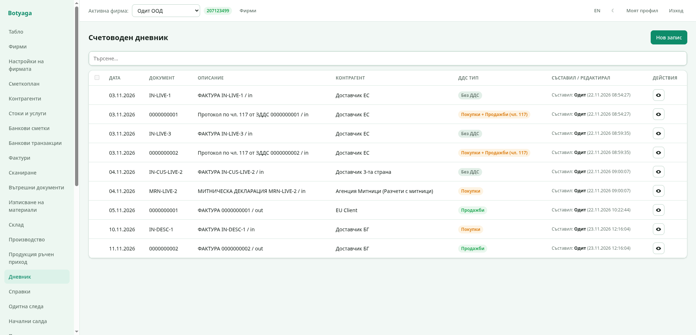

Начало · Дневник и одит
Дневник и одит
Ръчни записи и проследимост.
Дневник
Платежните и ръчните записи се създават с Дт/Кт сметки и се оценяват. Фактурите, склада и производството се записват автоматично.
Одитна следа
Всеки документ пази одитна история (създаване, редакция, потвърждаване) и печат. В админ панела има лог на влизанията с IP.
